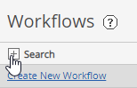
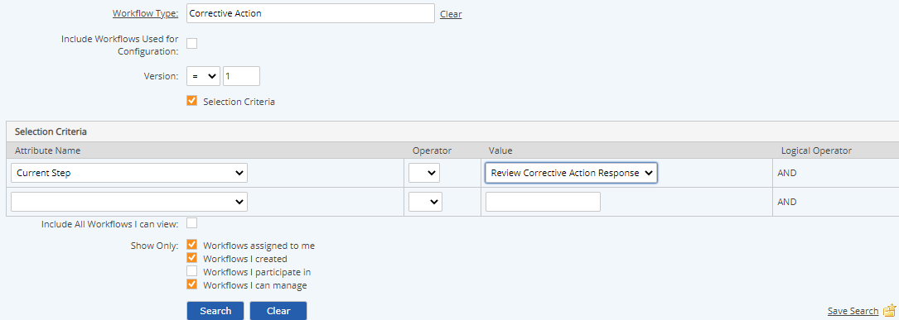

Search for tasks by specific criteria using the Search pane in the Tasks page.
You can also search for tasks related to system objects in the System Model page. See View Object-Related Workflows.
To search workflows:
Click the plus sign (+) in the Search bar to open the search pane.

The search criteria is shown. The search criteria defaults to the last search criteria used.
Selecting the search criteria and click Search.
The search results grid shows the Name, Due Date, Unique ID, Type, Status, Assignee and Role associated with the current workflow step.
Workflow search options:
Start Date: Due date greater or equal to given date
End Date: Due date less than or equal to given date
Due Date: Select a general time period, relative to the current date, from one week in the past to four weeks in the future.
Category: Search by status: All Workflows, Open, Closed, or Overdue.
Workflow Name:: Search for text string contained in workflow name.
Unique ID: Search by unique ID if you know it.
Creator: Click the Creator link to choose a user. Click Clear to clear selection. (To show workflows you assigned, use the Show option"Workflows I created.")
Assigned to: Click the Assigned to link to choose an individual user or the Select Group link to choose a user group. Click Clear to clear selection. (To show workflows assigned to yourself, use the Show option "Workflows assigned to me.")
Assigned by: Click the Assigned by link to choose a user. Click Clear to clear selection. (To show workflows you assigned, use the Show option "Workflows I participate it.")
Workflow Type: Click the Workflow Type link to choose the workflow type. Select the filter criteria to use (equal to, greater than, less than, etc.)
Selection Criteria: This allows you to search by current step and by matching field values on the workflow step forms. First, select a workflow type. Then, check the Selection Criteria box. You can then choose the fields and specifying a value and operator.

Show options: Check to show the workflows you have permission to view, according to the following categories: